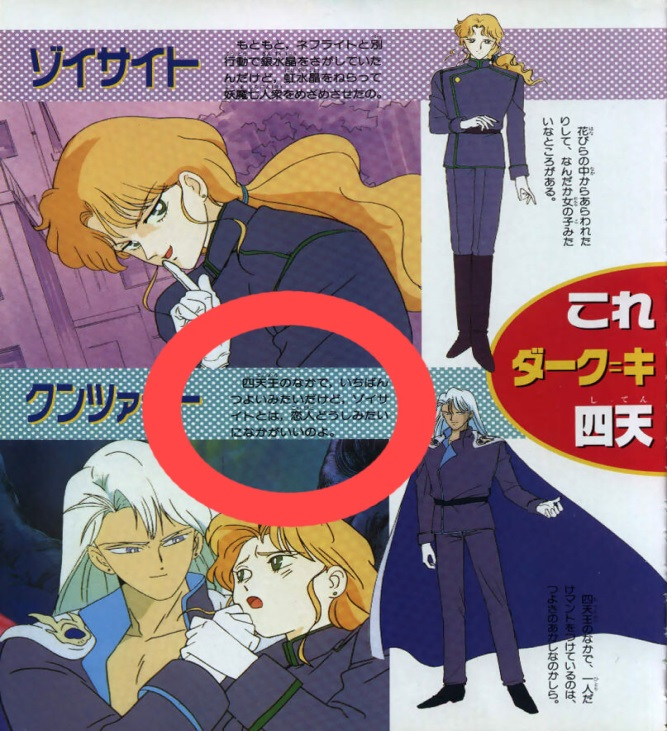
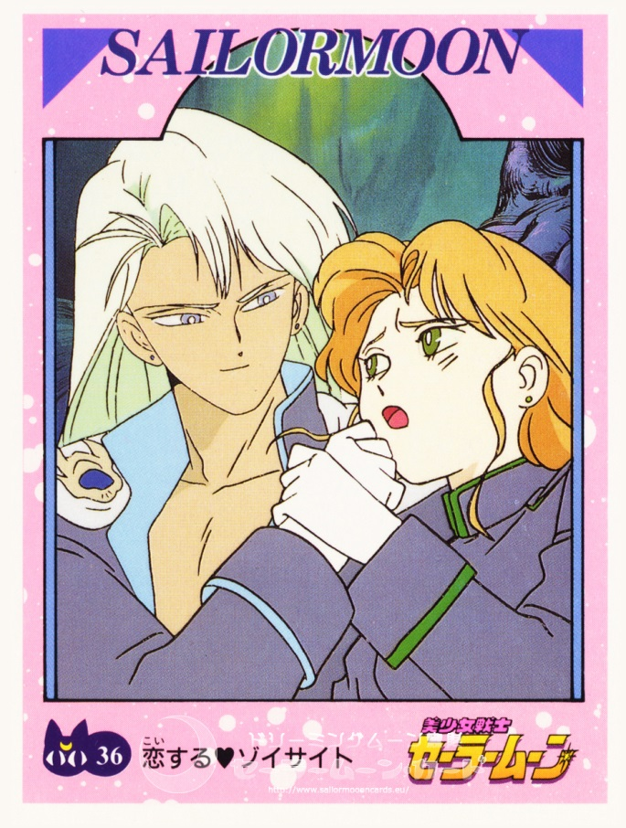
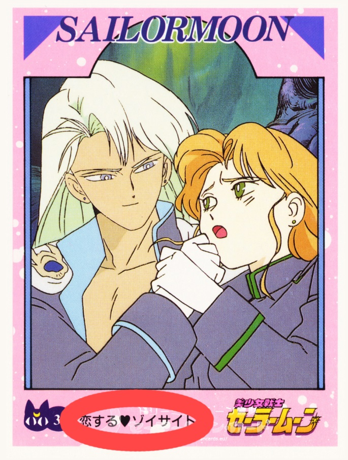

Bishoujo Senshi Sailormoon is the property of Naoko Takeuchi, Kodanshi Comics, and Toei Animation.
Шарлен
Официальное подтверждение отношений Кунсайта и Зойсайта
Когда я только начинала увлекаться Темным Королевством, велись горячие споры на тему того, что же значила предсмертная реплика Зойсайта. На эту тему была написана замечательная статья под названием «Зойсайты умирают в разных странах». Она была опубликована Ершел, и содержала перевод японской версии сцены, где умирает Зойсайт. Перевод был сделан Уравой.
Сегодня я хочу опровергнуть вывод, к которому Ершел (и в частности Урава делавший перевод) пришли в своей статье. Во-первых, я нашла официальную информацию подтверждающую наличие у Зойсайта и Кунсайта в аниме 90х годов романтических отношений. Во-вторых, я в целом не согласна с толкованием японской версии сцены, где умирает Зойсайт, приведенным Уравой и Ершелом. И все же я сразу скажу, что я очень уважаю Ершела и Ураву и искренне благодарна им за труд. В свое время, я читала статью «Зойсайты умирают в разных странах» с искренним интересом.
Сначала об официальных подтверждениях, которые я нашла. Совершенно случайно я нашла официальный японский анимебук, и одну карточку из коллекции карточек «Сейлор Мун», которые издавались только в Японии. Оба этих источника являются официальными подтверждениями наличия между Зойсайтом и Кунсайтом (в аниме 90-х годов) романтических отношений.
Эта страница из официального японского анимебука, который вы можете скачать здесь. Он называется TV Magazine Deluxe.
В красный кружок я обвела интересующий нас текст. Здесь написано:
四天王の中で、一番つよいみたいだけど、ゾイサイトとは恋人どうしみたいになかがいいのよ。
В русской транскрипции: Ситеннō но нака дэ, итибан тсуёи митаи дакедо, зоисаито то ва коибито дōси митаи ни нака га и но ё.
В русском переводе эта фраза будет выглядеть так:
Из всех шитенно (темных лордов), он выглядит самым сильным, однако с Зойсайтом у них хорошие отношения, похожие на те, какие бывают у любовников.
В переводе оригинальная орфография была сохранена. Текст переводится именно так. Думаю, его смысл будет всеми понят весьма однозначно, хоть формулировка и выбрана весьма завуалированная. Ни в Японии, ни где-то еще про отношения двух мужчин не употребили бы слова «любовники», если бы эти мужчины не были бы, собственно, любовниками.
«Коибито» (恋人) – переводится именно как любовники, и никак иначе. В японском языке это очень употребляемое слово. И тем более то, что «Из всех ситенно (темных лордов), он выглядит самым сильным» явно не противопоставлялось бы его отношениям с Зойсайтом, если бы это была просто дружба.
Информацию о том, кто стоял за разработкой анимебука и его издавал можно прочитать, скачав анимебук с сайта по ссылке, которую я привела выше. Насколько мне известно, Япония - это не та страна, где информация в анимебуках не проверяется авторами аниме перед изданием. Такое развитие событий в данном случае исключено. В анимебуке есть прямой намек на то, что Зойсайт и Кунсайт – любовники, который аниматоры и (или) сценаристы хотели до нас донести.
Теперь о карточке.
Возможно слово «карточка» звучит странно, но более подходящего описания этой бумажной продукции я, к сожалению, дать не могу. Как «card» из коллекции «sailor moon cards» она была обозначена на англоязычном сайте, где я ее нашла.
Эту и другие карточки можно найти здесь
Однако то, что «карточка» издавалась, не подлежит сомнению (качество скана, логотипы). Исходя из того, что она на японском – очевидно, что издавалась она в Японии.
Итак, карточка. В оригинале:
С обведенным мной текстом:
В данном случае надпись довольно короткая, но куда более информативная.
Текст на карточке: 恋するゾイサイト
В русской транскрипции: кои суру зоисаито
Русский перевод: влюбленный Зойсайт.
Именно так, и ни как иначе. «Кои суру» — это глагол который обозначает «быть влюбленным», один из самых распространенных в Японии глаголов для обозначения влюбленности между мужчиной и женщиной. Сердечко между словами 恋する и ゾイサイト также говорит само за себя.
Итак, аниматоры не говорили открытым текстом, что между этими двумя любовь, ни в одном из своих интервью. Но они написали это в печатной продукции. Чтобы избежать скандалов и необходимости объясняться, наверное.
Теперь мне хотелось бы прокомментировать вышеупомянутую статью «Зойсайты умирают в разных странах».
Цитата из статьи: (речь идет о реплике сказанной Зойсайтом перед смертью)
«Зойсайт сказал:
о-ситаи-ситэ-оримасита... Кунцаито-сама...
, и никак иначе! То есть, он в запредельно почтительной форме (в японском, как, наверное, многие знают, есть много грамматических способов выразить разную степень почтительности) сказал, что его отношение к Кунсайту выражается словом СИТАУ.
Слова СИТАУ я тогда не знал, и именно поэтому не распознал со слуха. Оно сравнительно редкое.
Сразу замечу, что во фразе нет слова ай, «любовь», хотя вслед за общей тенденцией я его туда вслушивал. Это не единственное японское слово с таким значением, но основное, и именно им передают соответствующее западное понятие. До вестернизации оно было малоупотребительно.
Возвращаясь к слову ситау. Вот его перевод на русский согласно словарю Конрада:
А вот объяснение этого же слова в японо-японском словаре «Коданся», перевод мой:
Ясно, что сюда подходят второе значение из яп.-рус. словаря и второе и третье из яп.-яп.
Я также просмотрел определения разных слов, означающих любовь. В принципе, все они определяются друг через друга, а значит, более или менее синонимичны. Однако характерно, что в определениях остальных слов упоминаются чувства, возникающие между мужчиной и женщиной, и половое влечение, а в статье о слове ситау — нет. Кроме того, у меня сложилось впечатление, что слово ситау среди них самое редкое и, наверное, имеет старинный и высокопарный оттенок. Но это ещё нужно проверять» (конец цитаты из статьи «Зойсайты умирают в разных странах»)
Как я уже упоминала в начале статьи, я не согласна с выводами, которые делают Ершел и в частности Урава, чьему перу принадлежит этот перевод и анализ. Для установления истины я также прослушала сцену смерти Зойсайта на японском. Он произносит именно ту фразу, о которой говорит Урава, а именно: お慕いしておりましたクンツァイト様。
Или, как приведено в статье Ершела:
О ситаи ситэ оримасита Кунцаито-сама.
Действительно, как и сказано в статье Ершела, Зойсайт выражает свои чувства к Кунсайту глаголом «ситау» (慕う).
Однако с тем, что «…характерно, что в определениях остальных слов упоминаются чувства, возникающие между мужчиной и женщиной, и половое влечение, а в статье о слове ситау — нет…» я не согласна. Во-первых, потому, что из приведенного Уравой перевода уже видно, что слово имеет высокопарный оттенок, а раз так описывать его значение в словаре, упоминая «половое влечение» будет довольно странным. Высокопарность слова еще не говорит о том, что им нельзя описывать земные чувства.
Во-вторых, потому, что в Японии принято выражать свои чувства во много раз более высокопарно и неконкретно, нежели это принято в Европе и Америке. Об этом можно прочитать в любой статье о японской культуре. Автор сам говорит что слово, которое сегодня переводиться как «любовь», то есть слово «ай» до американской оккупации практически не употреблялось. Разумеется, это не означало, что люди не выражали свои чувства друг к другу, просто слово «ай»(愛) являлось неприличным. Тут конечно можно заметить, что в Японии, как и в практически любой другой стране мира, до начала 20 века общество делилось на строго определенные сословия. Естественно, и крестьянское сословие и аристократическое сословие и самураи, говорили по-разному. Однако, я считаю что при анализе нравов злодеев первого сезона Сейлор Мун 90х (Темного королевства), никакие другие японские сословия кроме аристократического и самурайского не актуальны.
Для того чтобы сделать полный анализ реплики персонажа, словаря не достаточно. Надо смотреть и на контекст, в котором реплика была произнесена, и на общий стиль речи этого персонажа, и на общий стиль речи который используется в данном конкретном аниме. Как и пишет Урава «в японском, как, наверное, многие знают, есть много грамматических способов выразить разную степень почтительности». В Темном королевстве все время используют высшую степень почтительности, напоминая своей речью об аристократическом и самурайском сословиях традиционной Японии. Учитывая порядки в Темном Королевстве, это совсем неудивительно. Уже одно слово «королевство», которое в японском названии тоже есть, напоминает о средневековье. Здесь очень важно обратить внимание, на указывающий на принадлежность к высоким сословиям, высокопарный, стиль речи лордов и юм в аниме. Сейлор войны говорят совсем по-другому. Они используют нормальную современную японскую разговорную речь, и надо сказать – без лишней вежливости.
«Королевство» — это средневековый концепт. И круг монарха естественно будет состоять из аристократии и военной элиты. Естественно, думая о таких понятиях как «средневековье», «аристократия» и «военная элита» японцы в первую очередь думают о своем средневековье, своей аристократии и своей военной элите. Как и все народы. И стиль речи в обществе со средневековыми порядками, при условии что произведение, в котором такое общество присутствует, будет сделано японцами, скорее всего, будет идентичен стилю речи, который японцы ассоциируют со своим собственным средневековьем. Я почти на сто процентов уверена, что средневековая японская жена, принадлежавшая к аристократическому либо самурайскому сословию, умирая перед своим мужем, и не могла выразить свои чувства более нескромным словом нежели «ситау» — это был бы позор семье.
Для тех, кто не знает – даже обнять ее в этот момент для мужа считалось нескромным, какое там слово «ай»! И я бы даже сказала, что принадлежи она к самурайскому военному сословию, то с этим было бы вероятно строже, чем будь она аристократической дочерью. Нам нет смысла анализировать смысл глагола «ситау» исходя из того, как его применяют японцы в современной японской речи, ибо речь королевы, лордов и юм Темного королевства имеет мало общего с современной японской речью. В этой статье я не привожу примеры реплик из аниме, которые показывают, насколько высокопарный стиль речи принят в Темном Королевстве, но владея японским это можно сразу услышать это из любого отрывка аниме, где действие происходит в Темном королевстве. Послушайте сами!
Если мы проведем аналогию между тем, что слово «ай» до американской оккупации считалось неприличным (и если где-то и использовалось, то точно не в высоких сословиях на которые указывает высокопарный стиль речи) и тем, что в Темном королевстве средневековые порядки, напрашивается вывод, что даже если Зойсайт и Кунсайт каждую ночь проводили вместе в постели, в обществе Темного Королевства выразить свою любовь для Зойсайта было бы приемлемо только высокопарным словом. Например, словом «ситау».
И наконец, хотелось бы затронуть сам перевод слово «ситау».
Урава приводит перевод слова «ситау» из определенных словарей. Однако словари переводят его по-разному. Например, компьютерный словарь «Yarxi» переводит его как:
Быть привязанным к кому-либо, любить, обожать.
Тосковать, скучать по ком-чём-либо.
К тому же, с тем же иероглифом, которым записывается глагол «ситау» (慕) есть и другие слова, например 恋慕. Это слово читается как «ренбō» и обозначает «возв. любовь, влюбленность».
Исходя уже из этого, никаких проблем с переводом фразы «о-ситаи-ситэ-оримасита... Кунцаито-сама...» как «Я любил вас, Кунсайт», я не вижу.
Даже наоборот, я думаю, что это самый правильный перевод. Просто аниматоры, очевидно, не хотели, чтобы это выглядело скандально, а хотели, чтобы это выглядело возвышенно, как и все в Темном Королевстве.
На этом статью заканчиваю. Спасибо, что уделили ей время.
С уважением, Шарлен.